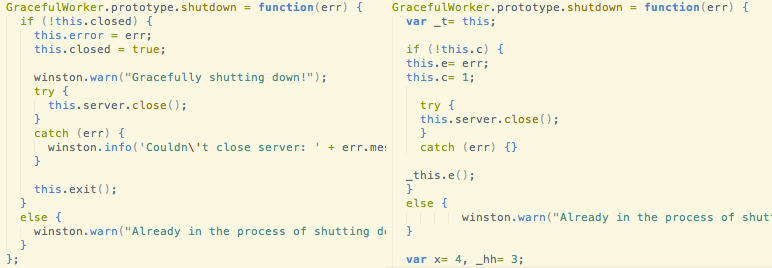
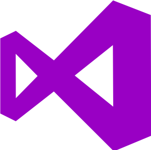

Social Engineering for Good, Not Evil
Because it's not just about the tech
The Divide
People matter
Why me?
The challenge
Student of human behavior
You've got the hardware
- We are systematic, logical thinkers
- Debugging = collecting data, theorizing, testing
- We've tuned our intuition for 'code smells'
Three C's of Communication
Clarity
- Specifics (explain "probably" in detail)
- Define terms
- Summarize with paraphrasing
- Agree on specific next steps
- Send meeting notes
Exercise: Clarity
- Any volunteers for some paraphrasing?
- I need this by Friday
- This is extremely urgent! Get it to me ASAP.
- Please have this on my desk by EOD today.
- Please send the email in a few days.
Confidence
- Eye contact
- No trail-off
- Posture
Exercise: Posture
- Let's try for better posture
- Stand up!
- Shoulders back/down and chest forward
- Pelvis tilted a little back
- Hold that for a bit
Caring
- Facial expressions, tones of voice
- Be less judgmental!
- Don't preach; influence
- The Platinum Rule
First, Seek Understanding
Pay attention!
Exercise: Pattern Recognition
- Which code is higher quality? Why?
You already do this for people
Make it deliberate!
Build Mental Models
- What kind of person are they?
- What do they know? What don't they know?
- What mindset might cause their current behavior?
- What are they trying to achieve with X action? Generally?
- What's the larger context?
- Incentives
- Deadlines
- Manager's desires
- Team
- History
Exercise: Build a mental model
Why did Han Solo say "I know"?
Play this game with friends!
- Movies, TV Shows, Books
- Why did character X do Y?
- Does that seem consistent with their character/world?
- Any guesses about the writer? Their biases?
Your biases
Testing Mental Models
- Verify your assumptions: what they know, their larger context
- Dig into their thought processes: "How did you approach X?"
- Get more detail: "Tell me more about X"
- Explore their self-image: "Why did you do X?" (repeat)
- Get at core motivations:
- Ask for recent, specific stories instead of hypotheticals
- How they use time and money - an expression of priorities
- Clarity: ask for terms to be defined, paraphrase back
Exercise: Build and Test
- First, find someone who uses a different Code Editor
- Take 1 minute to Build a Mental Model
- Each take 90 seconds for Testing


Now what?
Summary
- Become a student of human behavior
- First, seek understanding
- Pay attention: tune intuition with lots of data
- Build mental models: consider knowledge, context
- Understand some of your own biases
- Test mental models: validate assumptions, motivations
- Communicate well - three C's
- Clarity: specifics, next steps
- Confidence: posture, eye contact
- Caring: the platinum rule, judge less
Next steps: Advanced
- Understanding entire systems
- How a team works together
- How a team works with another team
- How a set of teams interact with each other
- How the entire business works
- Software usability - what is the user trying to achieve?
- Predicting emergent behavior - a few steps ahead
- Entrepreneurship - at its core, solving people's problems
Next Steps: Further reading
Thanks!